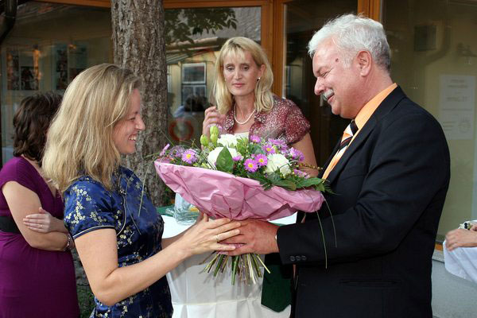

Willkommen in der Ordination von Dr. med. univ. Heidrun Chen
Ärztin für Traditionelle Chinesische Medizin und Allgemeinmedizin.
Die Traditionelle Chinesische Medizin bietet Ihnen viele seit Jahrtausenden bewährte Therapien für ein sehr breites Spektrum an Krankheiten und Beschwerden. Durch diese lange Tradition ist sie eines der bedeutendsten und erprobtesten Behandlungssysteme der Welt.
In meiner Praxis biete ich Ihnen diesen Erfahrungsschatz kombiniert mit moderner westlicher Medizin
Es ist mir wichtig, mir Zeit zu nehmen Sie individuell zu beraten und mit Ihnen Ihren persönlichen Therapieplan zu erstellen.
Ich freue mich auf Ihren Besuch
Heidrun Chen
News
10.11.2021 - Diplom Umweltmedizin
Verleihung des Umweltmedizin Diploms der Österreichischen Ärtzekammer.
25.6.2021 - Fortbildungsdiplom
Verleihung des Fortbildungsdiploms der Österreichischen Ärztekammer.
12.11.2017 - Klimaschutz
Um diese Ordination (inklusive Import der Akupunkturnadeln und chinesischer Kräuter)möglichst CO2 neutral zu führen, unterstützen wir Grundstückskäufe und Wiederbewaldungen im Regenwald der Österreicher in Costa Rica mit 830m2 und 15 gepflanzten Bäumen.
25.6.2016 - Fortbildungsdiplom
Verleihung des Fortbildungsdiploms der Österreichischen Ärztekammer.
22.11.2015 - Wiedereröffnung
Ich freue mich, Sie ab 1. Dezember wieder in meiner Ordination an einem neuen Standort begrüßen zu können. Die neue Adresse lautet
Biondekgasse 8-10/Stiege 4/Top 6 2500 Baden
14.01.2012 - Babypause
Da ich zu Ostern unser 4. Kind erwarte, gehe ich Anfang Februar in Babypause.
01.02.2011 - Laserakupunktur
Als schmerzfreie Alternative zur klassischen Nadelakupunktur biete ich für Kinder und schmerzempfindliche Patienten ab jetzt auch Laserakupunktur an.
28.01.2011 - Fortbildungsdiplom
Verleihung des Fortbildungsdiploms der Österreichischen Ärztekammer.
24.09.2010 - Eröffnung
Die feierliche Eröffnung meiner Praxis fand am 24. September 2010 in Anwesenheit von Bürgermeister KommR Kurt Staska statt. Den festlichen Rahmen bot die 15-Jährige Jubiläumsfeier der Gemeinschaftspraxis Baden Leesdorf von Helene Märzweiler.

Blumenübergabe durch Bürgermeister KommR Kurt Staska.Foto: © 2010psb/zink, Abdruck honorarfrei